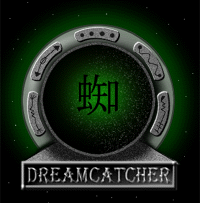

|
| ||
|
| ||
April 1997

The URL:
http://www.mdmax.com/ 
The Creator:
The Web Design Group,
San Francisco, California
http://www.wdg.com/ 
Other Sites Mentioned:
Pansonic Interactive: Baldies http://www.baldies.com/ 
The Golden Gate: http://www.goldengategame.com/ 
Lenn Pryor design site: http://www.lennpryor.com/ 
The following article was originally published in the Site Builder Network Magazine "Site Lights" column. (Now MSDN Online Voices "Design Discussion" column.)
I recently found myself tromping up a few flights of stairs to visit the Web Design Group's top-floor loft space, nestled in San Francisco's South of Market district. My eyes strolled across the environment, capturing unique art on the walls, a skylight covered with tarps to minimize the computer glare, rustic hardwood floors, and the long desk space, which was lined with faux cow fur and filled with PCs. In this eclectic place, the Web Design Group creates Web environments and avatars as unusual and as decorated as the space the group inhabits.
One new venue for their singularly decorated Web experiences is the Dream Catcher Magazine. Mdmax is the domain name for this colorful cyberspace spot, where surfers as well as the group's clients and prospects can experience emerging Net technologies and explore design integration that maximizes them.
Through the magazine, the group strives to deliver high-end content important enough to Internet users that they will be willing to shift to a new content interaction environment. Internet users, the group believes, will make this idea work by feeling comfortable using the software components.
When it comes to advertising banners, Web Design Group's approach differs from the model that currently predominates on the Web. The top banner and the side box, called "awareness spots," are kept for sponsors of Dream Catcher Online Magazine, as well as for different information sources on the Web that are related to the magazine sections. Because the awareness banners and boxes are an integral part of the magazine's overall content design, Web Design Group's graphic team does not confine itself to the more conventional narrow advertisement banners used by many cyberspace billboards.
Instead of directly introducing an unrelated product or service, the "awareness spots" are hot spots linked to buffer pages, a neutral zone between Dream Catcher Online Magazine and the sponsor home page. The neutral zone is a middle page location that extends the sponsorship beyond a small awareness spot. This neutral zone allows the sponsor to provide a unique interim advertisement to the end user, before sending them on to their site. This buffer page allows multiple links directly into the sponsor content, sometimes bypassing the home page, and transporting the user right into the information pages that are promoted and exposed. The awareness banners and boxes, as well as the neutral zones, are designed by the group's graphic team to be as enjoyable an experience as the content itself, offering a commercial exposure through visual art.
Web Design Group decided to "break the sound barrier" by bringing MIDI, AU, and WAV sound components to end-users. Their goal is to debunk the belief among some users that bandwidth limitations make the Web a silent medium. The sound elements used in Dream Catcher Online Magazine are an example of how to utilize simple, low-bandwidth audio solutions now, prior to the worldwide implementation of full video and audio streaming.
The magazine's current issue features a segment under the Aural Ripples  area that makes a bold move into delivering sound experiences on the Web. In the new issue, seven musicians from all around the world and stream their music through Aural Ripples section pages supported with colorful imagery and animations.
area that makes a bold move into delivering sound experiences on the Web. In the new issue, seven musicians from all around the world and stream their music through Aural Ripples section pages supported with colorful imagery and animations.
Each musician is featured in graphically unique-mini essays that cover musical history, talents, and style. Over a four-day period using Macromedia Director, independent designer Lenn Pryor  created some interesting animations to flow along with the sound files.
created some interesting animations to flow along with the sound files.
Lenn: "I have been working with Macromedia Director  for so long that I can "play" Director like an instrument, and that is exactly what I did. In some cases I let the rhythm and beats move my mouse and hands on the keyboard, randomly adding and removing cast members to and from the score, changing the tempo and palette, and beating the keyboard with the music. Each animation was simply me playing the computer visually, as opposed to musically, as the techno-musicians themselves had already done.
for so long that I can "play" Director like an instrument, and that is exactly what I did. In some cases I let the rhythm and beats move my mouse and hands on the keyboard, randomly adding and removing cast members to and from the score, changing the tempo and palette, and beating the keyboard with the music. Each animation was simply me playing the computer visually, as opposed to musically, as the techno-musicians themselves had already done.
"The animation was intended to be the visual counterpart to each DJ's track in Web-scale as time and bandwidth limited me. I would like to do more work in this area with DJs and techno-artists, and more robust media such as digital video or film should the opportunity arise.
"It was simply four days of a labor of love for free, which in the end jived perfectly with Eli's ideas and designs as he had planned them. There was literally no discussion between us of the content, just energy and a love for the music and digital creativity.
"After the animations were complete, I mixed the sound for Shockwave streaming audio compression, then Eli and WDG put it all together."
While in San Francisco I met with Eli and Amy Sagiv. We spent the afternoon gathered around Eli's machine, discussing everything from the influence of Neal Stephenson's sci-fi novel Snow Crash on the 3-D design of an avatar's world to the kitchy Sega stickers that are now all the rage in Tokyo.
Eli Sagiv is the Web Design Group's Internet Identity Designer. The creators of Dream Catcher Online Magazine are a team of graphic artists, 3D modelers, writers, digital photographers, programmers, market researchers, and interface designers. The Factory is the arm of Web Design Group  that creates original content and programming for the World Wide Web. The graphic team uses the Macintosh 9500 platform
that creates original content and programming for the World Wide Web. The graphic team uses the Macintosh 9500 platform  , Adobe Photoshop 3.5
, Adobe Photoshop 3.5  , Quark Express
, Quark Express  , Illustrator
, Illustrator  , and Kai's Power Tools
, and Kai's Power Tools  .
.
An infrastructure team formats HTML and other programming elements. Some of the code is outsourced to various developers around the United States. The group's HTML programmers use Nesbitt WebEdit Pro  , Microsoft ActiveX Control Pad to embed ActiveX Controls. Visual Basic® Scripting Edition (VBScript)
, Microsoft ActiveX Control Pad to embed ActiveX Controls. Visual Basic® Scripting Edition (VBScript)  and JavaScript
and JavaScript  elements are also used to develop the interaction between the frames and controls. Some of the Java elements are created using Kinetix: HyperWire
elements are also used to develop the interaction between the frames and controls. Some of the Java elements are created using Kinetix: HyperWire  and Macromedia AppletAce.
and Macromedia AppletAce.
The Web Design Group is a team of people that are inspired to combine art and technology. Tucked away behind a clever animated GIF file on the left-hand side of the screen lies a Timothy Leary quotation (left) that emphasizes the group's vision of collaboration between the technology community and the art community. Dream Catcher Online Magazine gives voice to many artists inspired by technology. By closing the gap between art and technology, the group envisions better-designed user interfaces, and a technology enhanced and driven by the arts.
Dream Catcher Online Magazine has an effective way of wrapping up information in a simple borderless, black frameset. The bulk of the content for the site is displayed in the lower right hand quadrant of the page, with navigation at the top and left. Each area provides a unique exploration of imagery, sounds, and typography—yet remains consistent within the outlying navigation. You can explore areas of Tokyo from a graphical city transportation map; read about the importance and relevance avatars have on our culture; read about Marque Cornblatt, an artist who combines toys, trash, and technology; or learn about the new generation Neoteric '97 multicultural festival in Japan this summer under the Neo Love section. These topics are unique and distant topics, yet they mold within the magazine's user interface.
Beyond the magazine, the Web Design Group pulls it together for Panasonic Online  . I spent some time exploring a site recently completed for Panasonic Online called the Golden Gate Game http://www.goldengategame.com
. I spent some time exploring a site recently completed for Panasonic Online called the Golden Gate Game http://www.goldengategame.com  . Designed like a treasure hunt, the site explores the Golden Gate region in a circa 1940s newspaper format, with photographs and old-time graphics mixed with gold metallic navigation controls. The Web Design Group makes great use of the HTML Layout control at this site. Also, check out the group's site for the Panasonic Online game called Baldies: http://www.baldies.com
. Designed like a treasure hunt, the site explores the Golden Gate region in a circa 1940s newspaper format, with photographs and old-time graphics mixed with gold metallic navigation controls. The Web Design Group makes great use of the HTML Layout control at this site. Also, check out the group's site for the Panasonic Online game called Baldies: http://www.baldies.com  .
.
In addition, the Web Design Group is adding new technologies to an existing, four-month-old site for the Panasonic TruPhoto printer, http://www.truphoto.com  , which was launched in December, 1996.
, which was launched in December, 1996.
I look forward to what lies ahead from the Web Design Group as they continue to produce new issues of their eccentric magazine, and continue to experiment with new ways of merging art and technology. I only hope they come up with a way to archive issues so that I can always get back to my favorite sections!
Nadja Vol Ochs is the design consultant in Microsoft's Developer Relations Group, a circumstance that, among other things, permits the tasteful appointments of her office to stand out. Her opinions are her own, not Microsoft's, but, hey, she can speak for us any old day.
Dream Catcher Magazine is full of fades from red to black, which are implemented via JavaScript. This technique works well to build the scene and fade pages in and out within the frameset. Each awareness spot has a fade applied when it loads, creating a smooth visual transition between awareness spots. "The Internet and the World Wide Web created a certain perspective from early adapters of the technology. It is hard to understand, and its interface is extremely annoying to navigate. Web Design Group would like to ignore the current content-delivery approach and redefine the content experience by elevating Web surfers to the easy-to-understand, cognitive approach of the PC desktop environment."Using JavaScript for fades or transitions:
The group goal:
Photo Credit: Michael Moore/Microsoft Corporate Photographer
Did you find this material useful? Gripes? Compliments? Suggestions for other articles? Write us!
© 1999 Microsoft Corporation. All rights reserved. Terms of use.